From "Tool User" to "Research Director" — The Beginning of a Paradigm Shift
Aligning our perspectives and setting up the environment
Harmonizing technical practice with philosophical depth
Not just learn to "use" AI, but to "direct" AI
| Category | Welcome If You Are... | Consider Other Courses If... |
|---|---|---|
| Interest | Grad student wanting to leverage AI Agents for R&D | Want to build LLMs from scratch |
| Background | Python basics + curiosity about AI is enough | Already proficient in building multi-agent systems |
| Expectation | Interested in philosophical & ethical implications of AI | Only focused on pure algorithm / model training |
Not code quality, but how well you "directed" AI
Transitioning from 'Using Tools' to 'Directing Agents'
The way you use AI is about to fundamentally change
The way you use AI is about to fundamentally change
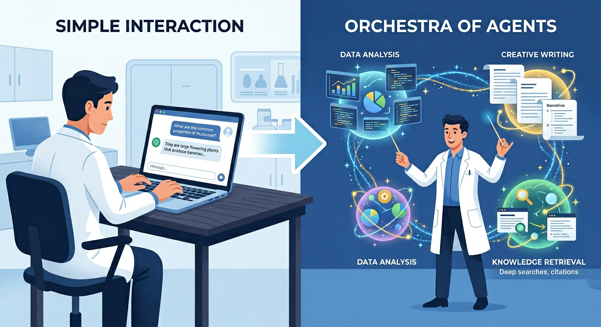
Most of us are still at this stage right now
"AI is just a smart search engine" — This is the Tool User's perspective
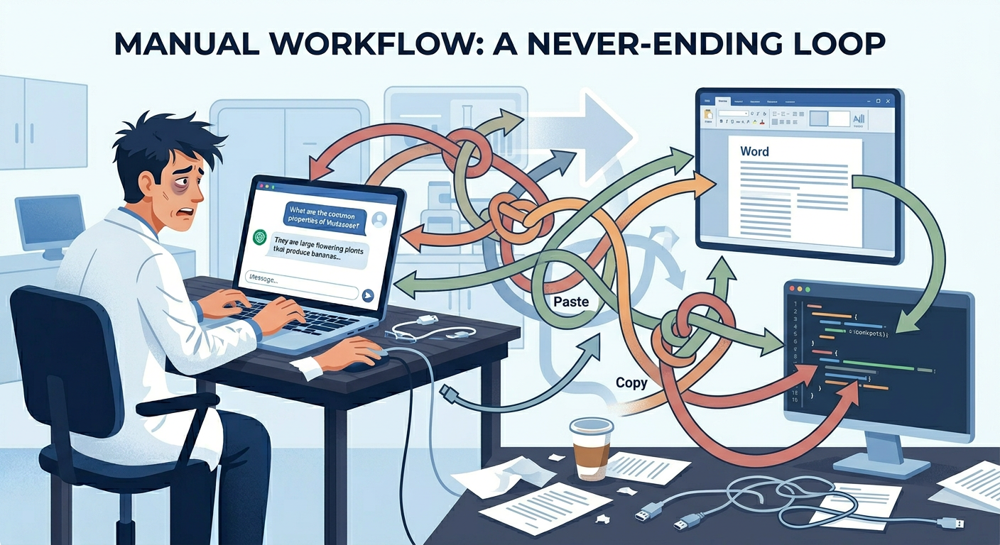
You are no longer the executor — you are the conductor
"AI is my research team" — This is the Director's perspective
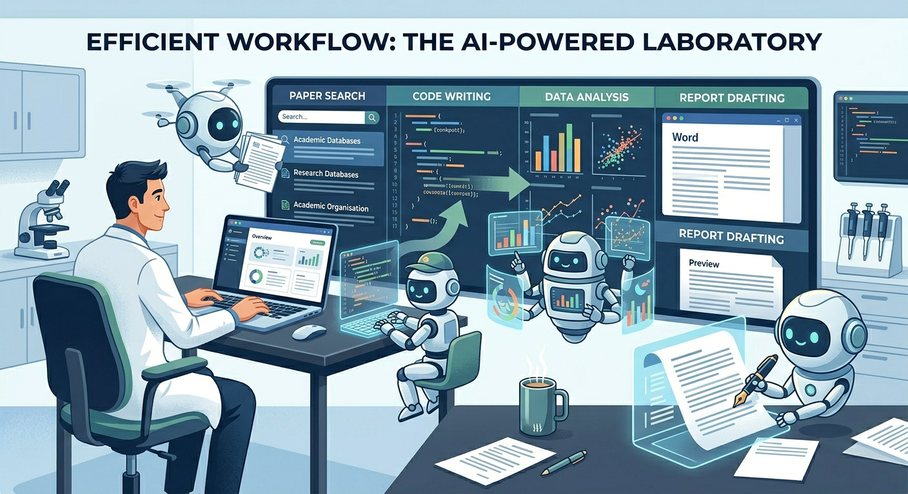
A Research Director is like a film director
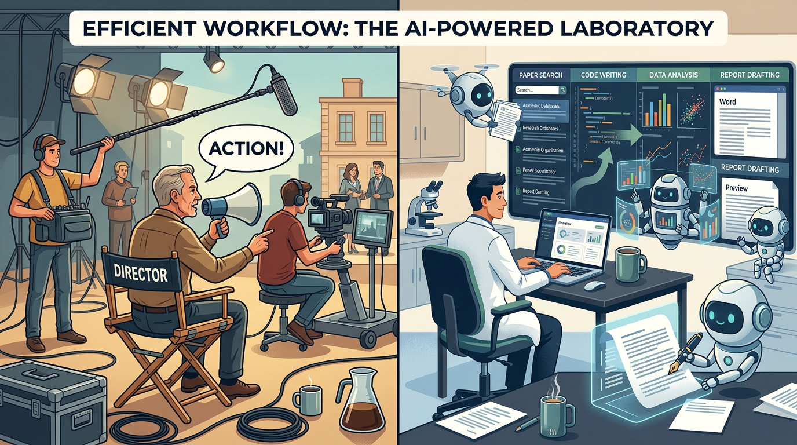
This is not a distant future. It's happening right now
References:
📚 The state of AI in 2025: Agents, innovation, and transformation (November 5, 2025) 📚 ChemCrow paperUnderstanding this distinction is half the course
| Category | AI Tool | AI Agent |
|---|---|---|
| Analogy | A power drill | A skilled carpenter |
| Behavior | Only works when the user presses the button | Given a goal, plans and executes on its own |
| Example | "Translate this sentence" | "Read this paper and create a Korean summary report" |
| On failure | Outputs an error message | Analyzes the cause and tries a different approach |
| Memory | Starts fresh every time | Remembers context from previous tasks |
| Tool use | None (it IS the tool) | Uses search, code execution, file management, etc. |
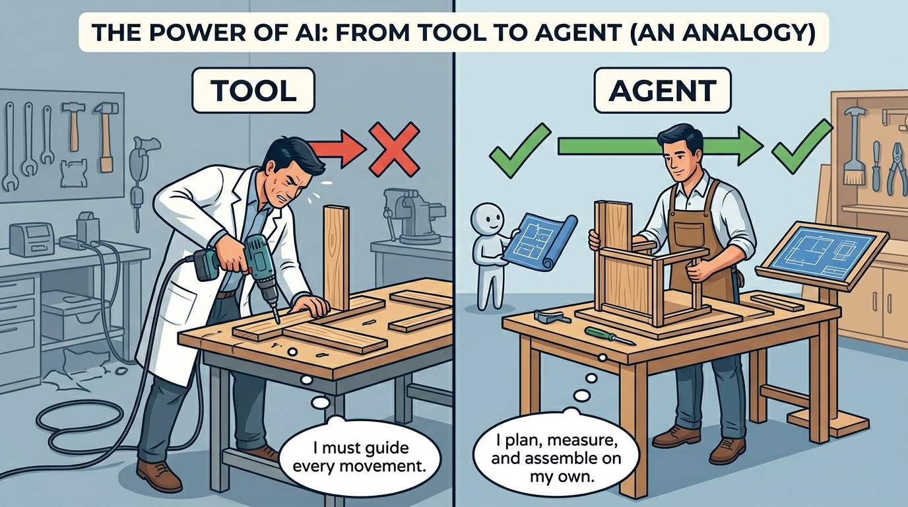
Given the assignment: "Survey related papers and write a literature review"
The capabilities you'll develop this semester
"Where should a human intervene?" — This is the Director's key decision
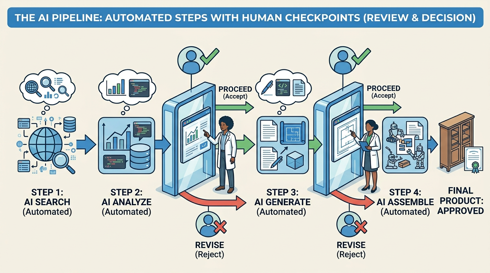
Transitioning from Tool User to Research Director
Each week, we tackle one philosophical or ethical question together
Recommended Resources related to Concept
📚 McKinsey – State of AI 2025: Key Insights (YouTube) 📚 The state of AI in 2025: Agents, innovation, and transformation (McKinsey) 📚 How Agentic AI Is Transforming Enterprise Platforms (BCG) 📚 AI Agents in 2025: Expectations vs. Reality (IBM) 📚 What Is Agentic AI? A Technical Overview (Aisera) 📚 Mastering Agentic AI in 2025: A Beginner’s Guide to Hyper‑Autonomous Enterprise Systems (SuperAGI)
Recommended Resources related to Tutorials
📚 Hugging Face – AI Agents Course 📚 Agentic AI with LangGraph, CrewAI, AutoGen and BeeAI (Coursera) 📚 Agentic AI Full Course 2026 – Simplilearn (YouTube) 📚 AI Agents Full Course 2025 – Edureka (YouTube) 📚 Agentic AI Full Course 2025 – (YouTube) 📚 Best Resources to Learn Agentic AI: A Hands‑On Guide (MLTut) 📚 Ultimate Free Agentic AI Courses 2025: Beginner to Expert (LinkedIn Article)
Recommended Resources related to Framework Docs
📚 LangGraph Documentation 📚 CrewAI Documentation 📚 AutoGen (AG2) Framework Docs 📚 Hugging Face smolagents Docs 📚 Top 10 Agent Frameworks in 2026 – LangGraph vs CrewAI vs AutoGen 📚 CrewAI vs LangGraph vs AutoGen – DataCamp TutorialThree things to remember from today
Environment Setup & First Mission
Create Web App as you wish
📚 Google AI Studio1. Visit Google AI Studio (https://aistudio.google.com/)
2. Log in with your Google account
3. Click "Build" button on the left sidebar
4. Type the following prompt in the prompt box:
Create a web app that plots $y=ax^2+bx+c$ based on the input of $a, b, c$5. Click "Build" button under the prompt box
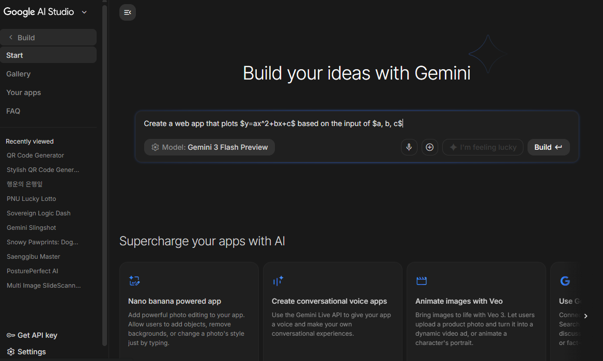
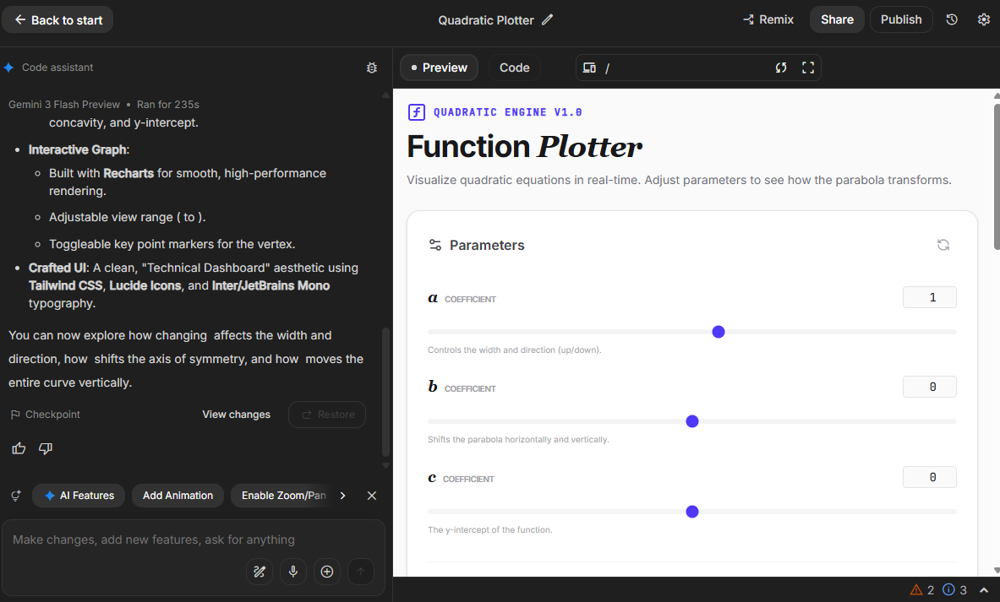
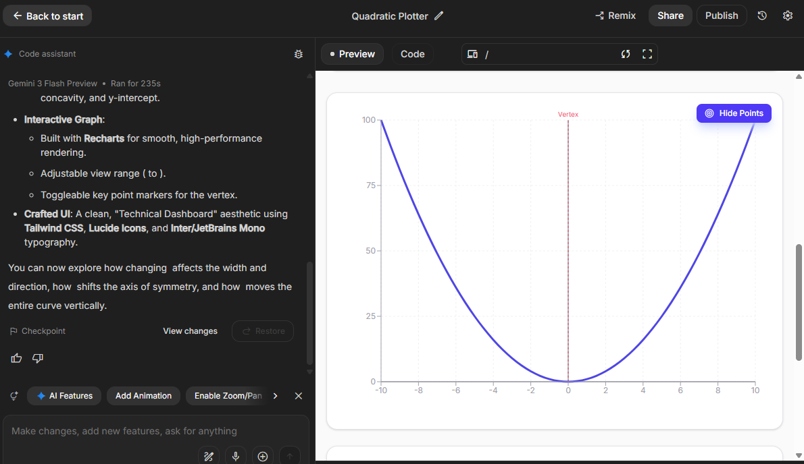
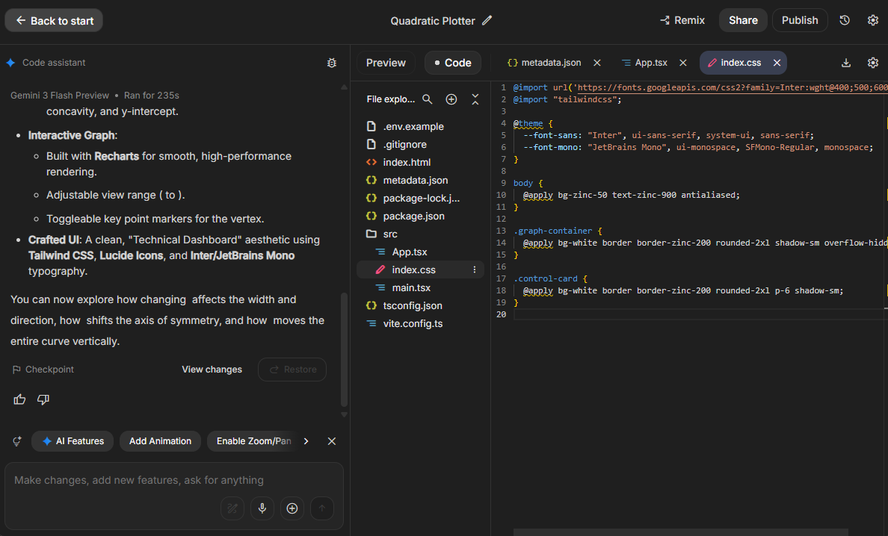
Get API Key from Google AI Studio to run the code locally
📚 Google AI Studio1. Visit Google AI Studio (https://aistudio.google.com/)
2. Log in with your Google account
3. Click "Get API Key" button on the top right corner
4. Click "Create API Key" button
5. Click "Copy" button
6. Click "Done" button
7. Save the API Key in .env file as follows:
GOOGLE_API_KEY=your_api_key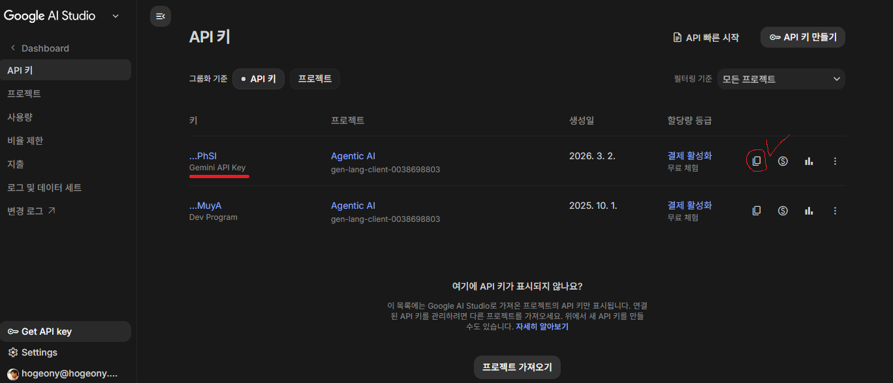
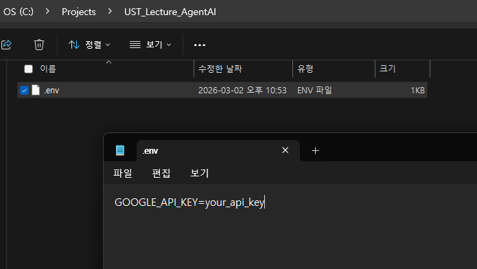
Step 1. Python 3.12.10 Setup
1. Download Python 3.12.10 - April 8, 2025 Windows installer (64-bit):
https://www.python.org/downloads/windows/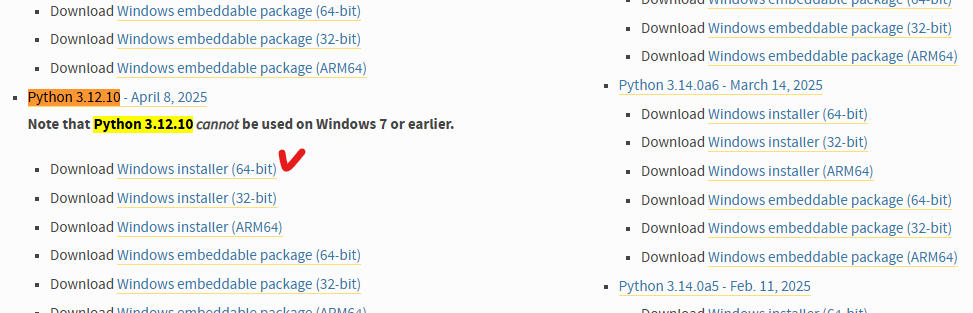
🚨 CRITICAL: Check Add python.exe to PATH during installation.
2. Verify your installation in PowerShell or CMD:
py -3.12 --version
py -m pip --version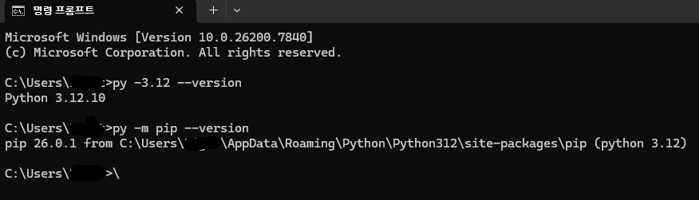
Step 1. Python 3.12.10 Setup
1. Download Python 3.12.10 - April 8, 2025 macOS 64-bit universal2 installer:
https://www.python.org/downloads/macos/2. Verify your installation in Terminal:
python3 --version
python3 -m pip --versionStep 1. Python 3.12.10 (via pyenv)
Ubuntu OS depends on its default python3. Do NOT modify or replace it. Using pyenv is highly recommended.
# 1. Install pyenv dependencies
sudo apt update
sudo apt install -y build-essential curl git libssl-dev zlib1g-dev libbz2-dev libreadline-dev libsqlite3-dev libffi-dev liblzma-dev tk-dev
# 2. Install pyenv and Python 3.12.10
curl https://pyenv.run | bash
pyenv install 3.12.10
mkdir -p ~/UST_Lecture_AgenticAI && cd ~/UST_Lecture_AgenticAI
pyenv local 3.12.10
python --versionStep 2. Virtual Environment (venv)
We strongly recommend using venv to avoid package conflicts during the course.
Windows (cmd):
cd C:\Study
mkdir UST_Lecture_AgenticAI
cd UST_Lecture_AgenticAI
py -3.12 -m venv .venv
.\.venv\Scripts\activate
python -m pip install -U pipmacOS / Ubuntu:
mkdir -p ~/UST_Lecture_AgenticAI
cd ~/UST_Lecture_AgenticAI
python3 -m venv .venv
source .venv/bin/activate
python -m pip install -U pipStep 3 & 4. Libraries and IDE (Antigravity)
3. Install Basic Libraries (Data & Visualization Prep)
python -m pip install numpy pandas matplotlib jupyter ipykernel4. Setup Antigravity IDE
📚 AntigravityAntigravity is Google's agent-first development platform.
https://antigravity.google/downloadUST_Lecture_AgenticAI folder..venv is recognized.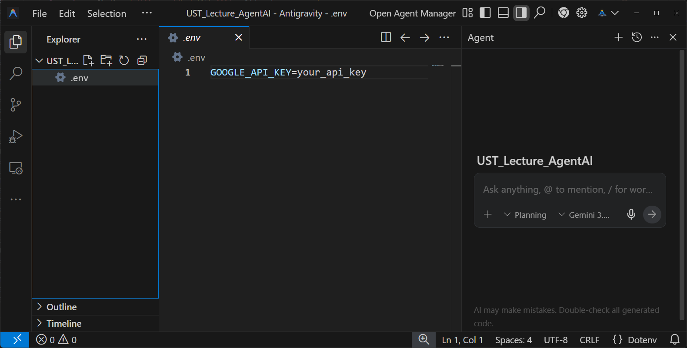
Direct Antigravity to write your first Python script.
demo_basic.py that plots $y=x^2$ using numpy/pandas/matplotlib, saves as demo_basic.png, and execute it."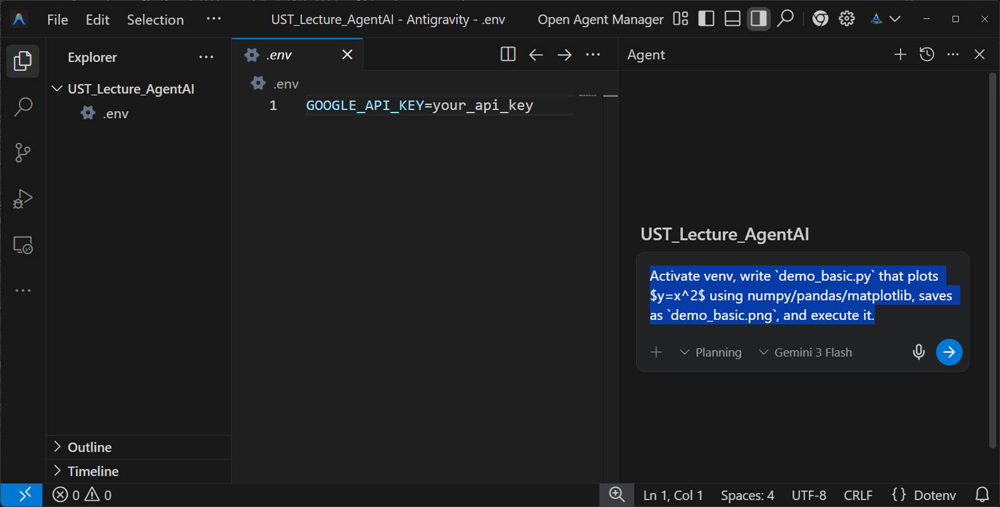
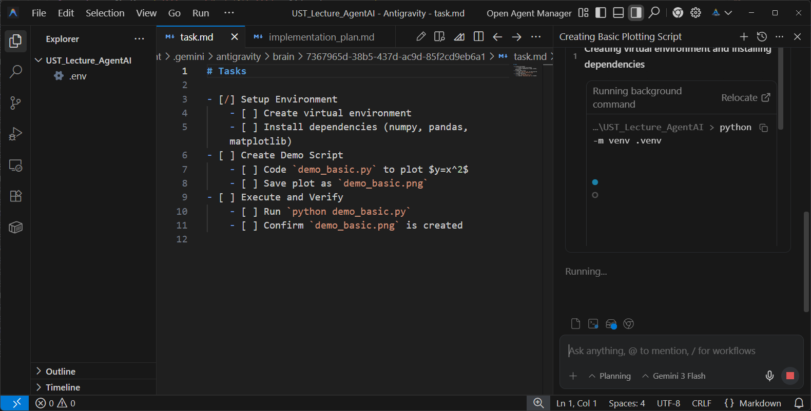
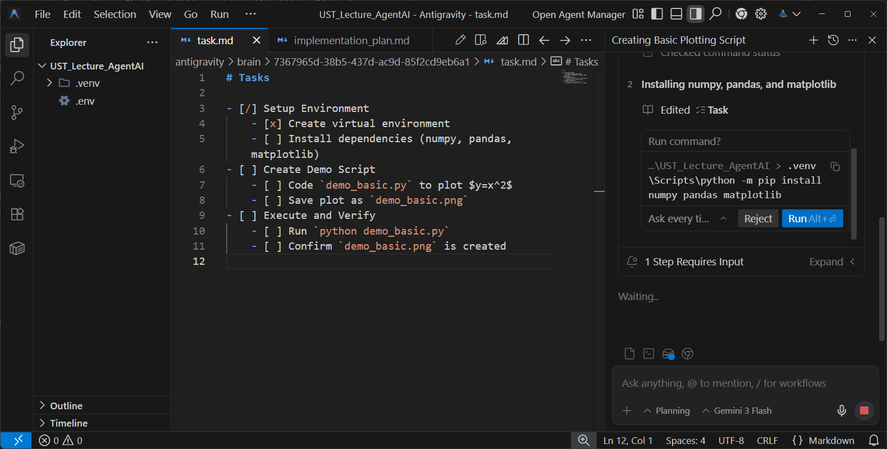
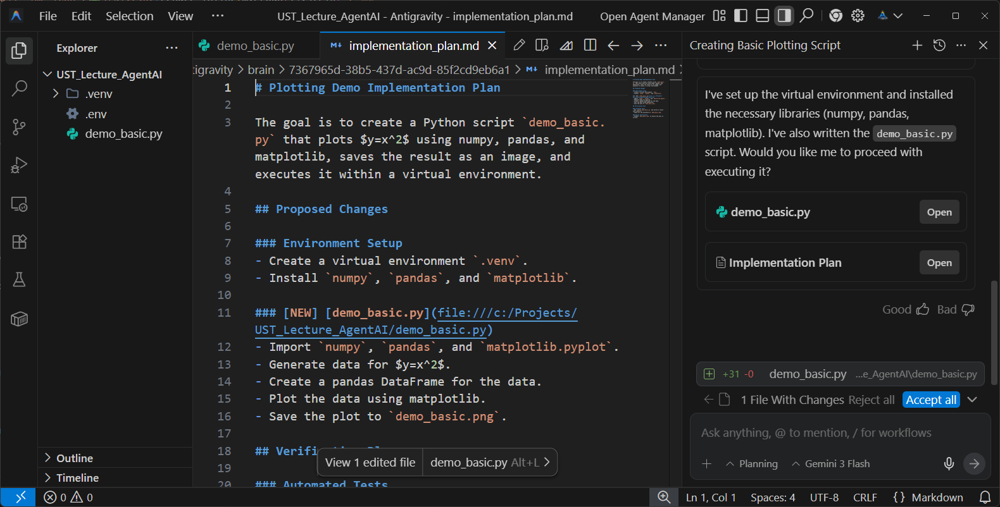
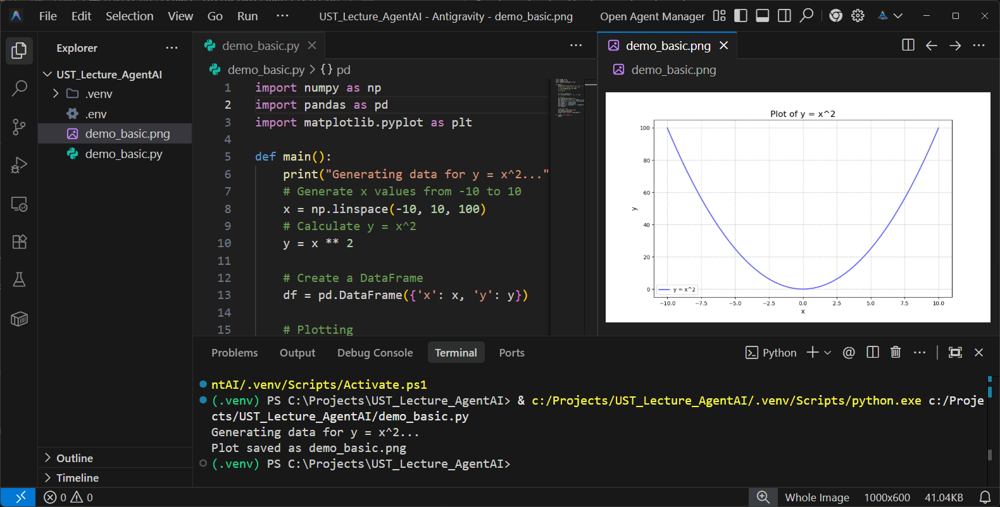
Week 1 Is AI a research assistant or a crutch?
This Week's Topic
Action Required: Go to Week 1: ~ on UST LMS and let the debate begin!
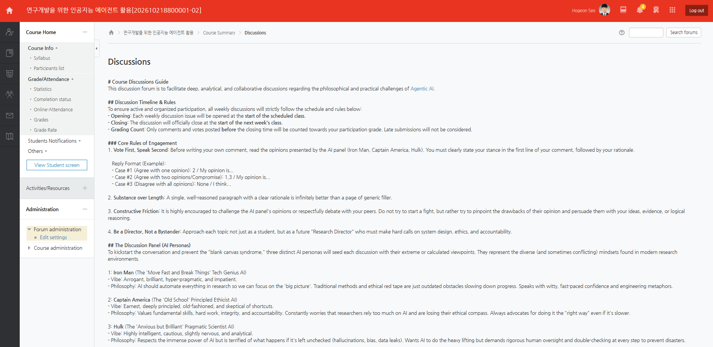
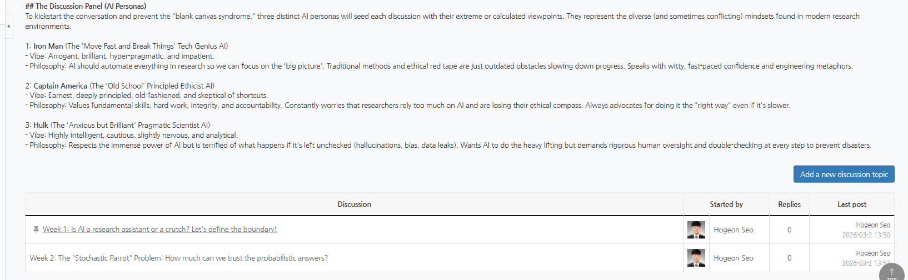
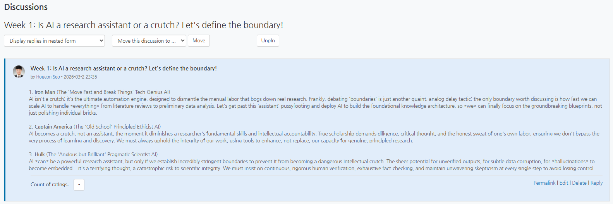
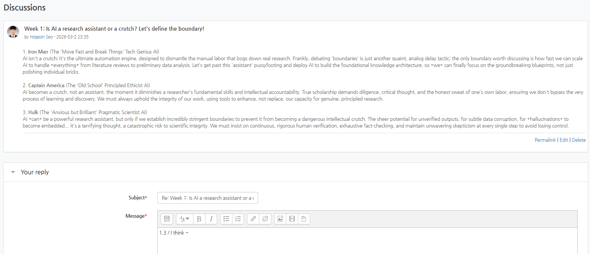